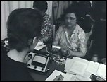
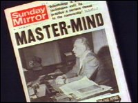

CHAPTER
SEVEN
The World's First Real Clear
On May 25, 1961, President Kennedy, in a momentous
speech before the United States Congress, urged America to put a man on the moon before
the decade was out. It took Hubbard a little while to jump on the bandwagon. His letter to
President Kennedy began:
In the early '40s a lonely letter wandered
into the White House, uninvited, unannounced. It was brief. It was factual, and it gave
America the deciding edge in arms superiority. Its subject was the atom bomb and its
signature was Professor Albert Einstein .... This is another such letter.
Hubbard offered his mental "technology" to
the President to assist in the Space Program. He repeated his usual tale about Russian
interest in his work, saying he had been offered Pavlov's laboratory in 1938. He said
Scientology "conditioning" would increase the IQ and "body skills" of
astronauts, and that "the perception of a pilot or Astronaut can be increased far
beyond normal human range and stamina and be brought to an astonishing level, not hitherto
attainable in a human being."
The "conditioning" was to cost $25 per hour.
Hubbard ended with an admonition to President Kennedy: "Such an office as yours
receives a flood of letters from fakes, crackpots and would-be wonderworkers. This is not
such a letter .... If that earlier letter from Einstein had been filed away, we would have
lost our all in the following twenty years. Is this such a letter?"
Hubbard did not receive a reply from the President. On
January 4, 1963, however, the Food and Drug Administration raided the Washington Church,
and Hubbard felt this constituted an indirect response.
The FDA seized a huge quantity of E-meters and books.
As with "Dianazene," the FDA charged mislabelling. The raid was precisely the
sort of theater Hubbard could use to effect. The dour agents, and the scale of the raid,
could only create public sympathy for Scientology. Such reactions by government agencies
can do more good than harm to a cult, uniting it and feeding its public image. It makes
wonderful press.
Eventually, the FDA won their case against the
labelling of the E-Meter, and forced the Scientologists to label it ineffective in the
diagnosis or treatment of disease. The Scientologists failed to thoroughly comply with the
ordered wording, and took issue with the court's decision (never implemented) to destroy
the confiscated books and meters, rather than returning them.
The U.S. government was not alone in its concern about
Scientology. On November 27, 1963, the Governor of the Australian State of Victoria
appointed a Board of Inquiry into Scientology. The board consisted of one man, Kevin
Victor Anderson. He conducted his inquiry with considerable showmanship and ferocity,
taking nearly two years to investigate and present his immense report.
While the Australian Inquiry was underway, Hubbard
added to his mystique by telling the Saturday Evening Post he had been approached
for the secrets of Scientology by Castro's Cuban government (the latest Communist threat).
1
At Saint Hill, Hubbard released his "Study
Technology." He began with the premise that no one teaches people how to
study. Korzybski had argued that it is crucial to fully understand every word in a text,
and that there is a physiological response to misunderstood words. Hubbard adopted these
ideas, without mention of their source. He dubbed the misunderstood word an
"m.u." (mis-understood).
Hubbard emphasized the necessity of studying "on
a gradient." It is important to base study on a completely understood idea, and to
proceed from one fully comprehended idea to the next. A student should progress with no
gaps in his understanding. In a school system, this process would mean that a child would
need to do first year chemistry to a 100 percent pass, before moving on to second year
chemistry.
Hubbard also asserted that much failure in study is
due to an "absence of mass." Where possible the student should come to grips
with what he is studying. So an engineer should have a good look at construction materials
and real bridges, rather than spending all of his time studying books explaining the
chemical makeup of materials, and structural mathematics. Abstractions should be
represented by the student through drawing, or with plasticine models (called "clay
demos"). Through these a sequence of actions could be demonstrated, and so more
thoroughly grasped.
Typically, there has been no proper scientific
evaluation of the effectiveness of Hubbard's Study Tech, but pupils of the several
Scientology children's schools do not display astonishing aptitude; indeed they seem to
perform below the educational average in some cases.
The Scientology world changed rapidly through the
early 1960s. By 1965, Hubbard had released an entire organizational system with which
Scientology "Orgs" had to comply, the Study Technology, the Ethics Technology,
and the new "Bridge."
The approach to Preclears became more systematic. They
would start with specific auditing processes or procedures at the bottom of the
"Bridge," progressing through numbered grades of "release," at each of
which a definite ability should be regained. These release grades deal with memory,
communication, problems, "overts" and "withholds," upsets, and
justifications for failure, from Grade 0 to IV. 2
Perhaps the most drastic changes came with the Ethics
Technology. Hubbard said that certain people are "antisocial," and are
determined opponents of anything which can benefit humanity, especially Scientology. He
labelled such people "Suppressive Persons" (or SPs), and asserted that SPs make
up two and a half percent of the population. A further seventeen and a half percent are
said to be influenced by SPs to such an extent that they are "Potential Trouble
Sources" (or PTS). Hubbard decided that PTS people would have to
"disconnect" (refuse any communication or contact) from SPs identified by the
organization. The rigidity with which this rule has been applied over the years has
varied, but marriages have been split up when someone had to disconnect from a spouse
labelled "Suppressive."
With the new Ethics Technology came a department of
the Org which would "keep ethics in." Hubbard determined that unethical people
would not make gains in Scientology, so conversely anyone who did not make gains in
Scientology was unethical ("out-ethics"). Where Scientology failed it was the
fault of the recipient, never of Scientology. Ethics Officers came into being to deal with
"out-ethics" people.
Hubbard introduced a system of reports, where any
Scientologist seeing a supposed misapplication of the Technology, or any transgression
against Scientology morality, would write a report, which was sent to the Ethics Office. A
copy would be filed, and the original sent to the offender. When enough Knowledge Reports
had stacked up in a person's folder, he would theoretically be hauled before a Committee
of Evidence, and his behavior assessed against Hubbard's extensive list of
"Crimes" and "High Crimes." If his "criminality" was
sufficient, he would be given a Suppressive Person Declare, copies of which would be
posted in Scientology Organizations. Suppressive Person Declares are still issued, and
Scientologists could not, and cannot, associate with SPs, without themselves becoming the
subject of a Declare.
John McMaster witnessed the introduction and
intensification of Ethics first hand. He arrived at Saint Hill in 1963 to do the Briefing
Course. His stepmother had pressured him into Scientology a few months earlier, in South
Africa. McMaster had been a student of medicine, hoping to specialize in neurosurgery. His
fascination for medicine came from direct experience - part of his stomach had been
removed because it was cancerous. On his arrival at the Durban Scientology Center he had
been in considerable pain for some years. McMaster claims that his first auditing session
relieved the pain completely. 3
By the time Hubbard introduced "SP
Declares," in 1965, McMaster was overseeing the Saint Hill Special Briefing Course.
Any interesting ideas generated by the students would be taken to Hubbard. The "Power
Processes," or "Level V," came into being this way. They coincided with
Hubbard's decision that he was the "Source" of Scientology. From this time on,
Scientologists were assured that Hubbard had "developed" all of Scientology and
Dianetics. To quote his own words, first published in February 1965, and still a part of
every major Scientology course: "Willing as I was to accept suggestions and data,
only a handful of suggestions (less than twenty) had long run value and none were
major or basic." 4
In the beginning, Hubbard tried to legitimize his
ideas by acknowledging his debt to thinkers as diverse as Anaxagoras, Lao Tze, Newton and
Freud. For a while, Hubbard had awarded the title "Fellow of Scientology" to
major contributors. Time had convinced Hubbard that he alone was the fount of all wisdom.
 Since its inception four years before, only Briefing
Course students had received auditing at Saint Hill (right). However, with the
advent of Power Processes, Saint Hill began to accept paying Preclears. A Hubbard Guidance
Center came into being, initially consisting of one man, John McMaster. McMaster says huge
amounts were charged to individuals for "Power" auditing, and adds, wryly, that
he received none of the money. Despite the high price, Scientologists flocked to Saint
Hill. The Hubbard Guidance Center rapidly increased in size.
Hubbard frequently released new "rundowns"
or "levels" which attempted to justify the failure of earlier techniques. Each
new rundown would be launched amid a fanfare of publicity, and claims of miraculous
results. One critic has complained of "auditing junkies," forever waiting for
the next "level" to resolve their chronic problems. The issue of a new
"level," was invariably greeted with a rash of incredible Success Stories,
written as soon as an individual finished the auditing in question. These were usually
vague, and always enthusiastic. "This level cracked my case!" is a fair example
of these often meaningless statements.
Power, or Level V, was more successful in attracting
people than previous "rundowns," starting a financial boom at Saint Hill. Over
the years, Hubbard asserted time and time again that he had achieved a routine way of
"Clearing" people. Both the definition of Clear and the methods for its
achievement changed periodically. After Power, he released Level VI, of which he said:
A clear has no vicious Reactive Mind
and operates at total mental capacity just like the first book (Dianetics: The Modern
Science of Mental Health) said. In fact every early definition of CLEAR is found to
be correct .... Level VI requires several months to audit through even with expert
training. But at its end, MAGIC. There's the state of clear we've sought for all
these years. It fits all definitions ever given for clear. 5
Even this breakthrough proved ephemeral, and a few
months later, Hubbard announced Level VII, which became the "Clearing Course."
The Clearing Course was to prove the most durable method of Clearing, lasting until 1978,
and is still occasionally used today.
The usual trickle of defecting members who set up
their own Scientological groups continued through the 1960s. A splinter group called
Compulsions Analysis came into being in London, in 1964, under the direction of a couple
named Robert and Mary Ann Moor, who called themselves the "De Grimstons." They
later renamed their organization "The Process," and later yet, "The Church
of the Final Judgment." Mass murderer Charles Manson was an enthusiastic supporter
both of The Process, and of Scientology. Author Maury Terry is convinced that David
Berkowitz, the "Son of Sam" killer, was also involved with The Process. 6
In 1965, Charles Berner, a leading Scientologist, left
the fold, and founded "Abilitism." Berner later headed the "Anubhava School
of Enlightenment," and was responsible for the "Enlightenment Intensive,"
which has achieved a certain respectability. Hubbard made Berner the target of
considerable harassment.
A major challenge to Hubbard's leadership reared its
head in 1964 in the shape of "Amprinistics." The founder of this new movement
was Harry Thompson. He said Hubbard had refused his offer of a new and highly workable
procedure in 1963, so he had spent two years researching it, and having proven its
validity beyond doubt, wished to give it to the world. Unfortunately for Thompson, he
chose to give it, or rather sell it, to Scientologists first. Thompson announced his
discovery in a huge mailing to Scientologists. He asked that they simply try his method to
see if it worked. Thompson also offered an escape from the Ethics Officers, and the
increasing discipline of Hubbard's organization.
Jack Horner was one of the very few people who had
stayed the course with Hubbard from his beginnings in Elizabeth, New Jersey. Horner took
the first Dianetic course in June 1950. He was one of the first to try to convince Hubbard
of the validity of "past lives" and the first "Doctor" of Scientology.
Horner was one of the few people that Hubbard trusted to give Advanced Clinical Courses.
In 1965, Horner had been promoted in The Auditor magazine as the first
"Honors graduate" of the final section of the immense Saint Hill Special
Briefing Course. Disillusioned with the increasing control which Hubbard was visiting upon
Scientologists, Horner joined Amprinistics. 7
Hubbard decided to designate certain materials
"confidential" at this time, perhaps so that Scientology could offer something
Amprinistics could not. Scientologists believe Hubbard's argument that confidentiality was
introduced because the relevant materials are highly "restimulative" (upsetting)
to people who are not ready for them. Whatever the reason, Power, Level VI and the
Clearing Course were designated "confidential," and remain so to this day. The
same is true of the later OT levels.
On September 27, 1965, Hubbard issued a "Hubbard
Communications Office Executive Letter" dealing with Amprinistics and its members.
Every member of the new group, whether they had entered it via Scientology or not, was
labelled Fair Game. Their gatherings were to be broken up. Complaints were to be made to
the police and any chance of litigation was to be taken. Scientologists were to attack the
followers of Amprinistics in every way they could.
Hubbard forbade mention of the very word
"Amprinistics." The "Executive Letter" disappeared from public
circulation long ago, but despite these severe measures, Homer's "Eductivism,"
an offshoot of Amprinistics, exists to this day.
Level VI was "solo-audited," as was the
Clearing Course. In solo-auditing the person holds both of the E-meter cans in one hand,
while giving himself the "auditing commands." Level VI and the Clearing Course
consist of similar material to OT 2 (for which see the chapter "On to OT"). The
auditing is likened by Hubbard to digging a ditch, because it is excruciatingly boring.
The first Clearing Course Auditors spent at least six months solo-auditing for several
hours daily.
 In December 1965, while these pioneers were
digging their respective ditches, the Australian State of Victoria introduced a
Psychological Practices Act which completely outlawed Scientology. The Anderson Report,
published in October (and widely reported in the Australian press - right),
contains much sound, factual information and many perceptive remarks. However, it has been
criticized even by some who are vocal in their opposition to Scientology. The report was
173 pages long and had nineteen appendices. The evidence of 151 witnesses was gathered
into a supplement of 8,290 pages. In the report Anderson concluded:
Scientology is evil; its techniques evil; its
practice a serious threat to the community, medically, morally and socially; and its
adherents sadly deluded and often mentally ill .... The Board has been unable to find any
worthwhile redeeming feature in Scientology.
As with the earlier FDA raid in the United States, the
ban in Australia probably did Scientology more good than harm. It provided free publicity,
and because it had the trappings of a witch-hunt, made Scientology the underdog, gaining
Hubbard much needed support. Martyrdom is a valuable ingredient in the creation of mass
movements. Further, it was impossible to ban Scientology. The followers in Victoria simply
changed their name to the "Church of the New Faith," and carried on where they
had left off.
In Britain on February 7, 1966, in the House of
Commons, Lord Balniel asked Health Minister, Kenneth Robinson, for an Inquiry into
Scientology. Within two days of Balniel's request Hubbard had published an "Executive
Directive" in which he put forward his plan to "get a detective on that Lord's
past to unearth the tidbits. They're there . . . governments are SP [Suppressive
People]." 8
Soon after, Hubbard left England, travelling by stages
to Rhodesia. Over the next few weeks he continued to react to Lord Balniel's demand for an
official investigation. On February 14, Hubbard resigned his doctorate in a "Policy
Letter" headed "Doctor Title Abolished": "The title of 'Mister',
implying 'Master' I also abandon. I wish to be known solely by my name 'Ron' or
Hubbard."
Another Policy Letter, "Attacks on
Scientology," was issued the next day. If anyone started an investigation into
Scientology the following actions should be taken:
1. Spot who is attacking us.
2. Start investigating them promptly for FELONIES or worse using own professionals, not
outside agencies.
3. Double curve our reply by saying we welcome an investigation of them.
4. Start feeding lurid, blood sex crime [sic] actual evidence on the attackers to the
press. 9
On February 17, Hubbard created the "Public
Investigation Section": "to help LRH investigate public matters and individuals
which seem to impede human liberty so that such matters may be exposed and to furnish
intelligence required in guiding the progress of Scientology." 10
A month after these events, the story of a private
investigator was carried in British newspapers. Vic Filson had been recruited to establish
an investigation section. He lasted a week. The Scientologist who gave him his
instructions at Saint Hill told him dossiers were to be made on "special
subjects":
But the truth didn't dawn until I got a
memorandum from Hubbard himself. It was horrifying. It was a set of instructions to
investigate the activities of psychiatrists in Britain and to prepare a dossier on each.
And I was told that the first victim was to be Lord Balniel.
Hubbard instructed Filson to find a skeleton in the
cupboard of every psychiatrist practicing in England. Hubbard was looking for crimes such
as assault, rape and homicide. His objective was to eliminate every single
psychiatrist." 11
The Hubbard Communications Office Policy Letter
"Attacks on Scientology" was expanded on February 18, to include,
"investigating noisily the attackers."
At the end of February, John McMaster, who had just
flown to Los Angeles, was surprised to hear that he had become the "World's First
Real Clear." Hubbard had sent out a promotional piece announcing this to
Scientologists throughout the world. Only then was McMaster recalled to England, and given
his "Clear Check," to set the record straight. After all, Scientologists needed
a boost in morale. 12
In March, Hubbard published "What Is
Greatness?" which rounded off his statements of February: "The hardest task one
can have is to continue to love one's fellows despite all reasons he should not .... A
primary trap is to succumb to invitations to hate. There are those who appoint one their
executioners. Sometimes for the sake of the safety of others, it is necessary to act, but
it is not necessary also to hate them."
On March 1, the short-lived Public Investigations
Section became the Guardian's Office (GO). "Noisy investigation," or
rumor-mongering, was not their only talent, and the GO became a formidable force. After
the false starts of the Department of Official Affairs and the Department of Government
Affairs, Hubbard at last had his own private Intelligence Agency.
John McMaster became the ambassador of Scientology. He
was Hubbard's deliberate choice for the "First Clear." McMaster is slight with
naturally white hair, and is a remarkable public speaker with a compelling voice. He was
Scientology's spokesman in television interviews throughout the English-speaking world, a
personification, so it seemed, of gentleness and love. While his message was being beamed
over the airwaves, and delivered personally to packed audiences the world over, the
Scientology Organizations were becoming increasingly less gentle and loving in their
treatment of both their members and their critics.
FOOTNOTES
1. Cooper, The Scandal of
Scientology, p. 118
2. Organization Executive
Course, vol. 0, p. 166
3. Interview, John McMaster,
London, May 1984
4. Organization Executive
Course, vol. 0, p. 35
5. Technical Bulletins of
Dianetics & Scientology vol. 6, p. 19
6. Wallis, The Road to
Total Freedom, p.149; Daily Mail, 8 December 1965; Guardian's Office memos
in "Squeaky" Fromm, former follower of Charles Manson
7. Wallis, pp. 152 and 150
8. Foster report, paras 12
and 181
9. Reprinted in Foster
report, para 181, and in Latey judgement, 23 July 1984
10. Foster report, para 181
11. The People, 20
March 1966
12. The Auditor 13;
interview, John McMaster. |